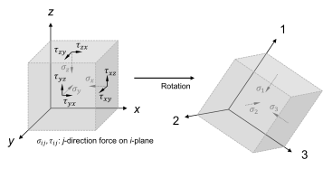
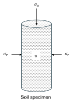
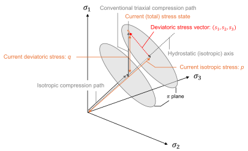

Ch2.2
Principal stress and strain
In continuum mechanics, the concept of principal directions, along which the stress and strain tensors become diagonal, is of fundamental significance. These directions correspond to orientations where shear components vanish, allowing the mechanical response of materials to be interpreted in terms of purely normal actions (Fig. 2.2.1). The principal values, termed principal stresses and principal strains, provide a basis for simplifying the mathematical treatment of deformation.

The principal stresses are obtained as the eigenvalues $\sigma_i$ of the Cauchy stress tensor $\boldsymbol{\sigma}$:
The corresponding eigenvectors $\boldsymbol{\Upsilon}_i$ are determined by solving:
Their unit vectors $\mathbf{e}_i$ are:
Here, $\lVert\ \rVert$ denotes the norm of a vector. The rotation to identify the principal stress direction is then mathematically described by the eigenvector matrix $\mathbf{Q}=[\mathbf{e}_1,\mathbf{e}_2,\mathbf{e}_3]$:
The principal stresses are ordered as follows:
Here, $\sigma_1$ is the major (maximum) principal stress, $\sigma_2$ the intermediate principal stress, and $\sigma_3$ the minor principal stress. Similarly, the incremental principal strains are obtained as the eigenvalues of the linear strain increment tensor $\mathrm{d}\boldsymbol{\varepsilon}$ and ordered as follows:
In geotechnical engineering, most laboratory tests are designed to apply and measure stresses along principal directions, such as in oedometer or triaxial tests (Fig. 2.2.2), thereby reducing the complexity and enhancing the precision of interpretation.

Under conventional triaxial compression conditions, the axial stress $\sigma_a$ exceeds the radial stress $\sigma_r$, and thus they correspond to the major and minor principal stresses, respectively:
The effective principal stresses then become:
Rather than directly using these principal stresses, it is more practical to represent the triaxial stress state using two scalar quantities: the mean effective stress $p'$, and the deviatoric stress $q$, which express the isotropic and distortional components of the effective stress, respectively:
Also, the stress ratio defined as follows is often used in soil mechanics:
Meanwhile, the scalar $q$ is not the sole measure of the deviatoric character of a stress state. The deviatoric stress tensor $\mathbf{s}$ is here introduced as the most general representation of deviatoric stress conditions:
Their principal values are obtained by the orthogonal transformation:
This implies that, in the principal stress space, any stress state can be decomposed into an isotropic stress vector $\mathbf{p}'=p'(1,1,1)$ and a deviatoric stress vector consisting of the principal components of $\mathbf{s}$, or $s_i$. Also, the trace of the transformed deviatoric tensor satisfies $\operatorname{tr}(\mathbf{Q}^{\mathsf T}\mathbf{s}\mathbf{Q})=s_1+s_2+s_3=0$, or the deviatoric stress vector lies within a certain plane. This plane is referred to as the $\pi$-plane. The norm of the deviatoric stress vector is:
Under triaxial compression conditions, this reduces to a linear function of $q$:
This demonstrates that the scalar quantity $q$, commonly used in soil mechanics, is consistent with the representative magnitude of the general deviatoric stress tensor. The physical interpretation of $p'$ and $q$ in the principal stress space is illustrated in Fig. 2.2.3.

Note that the roles are reversed in the case of triaxial extension, where the axial stress is lower than the radial confinement:
Similarly, the incremental principal strains are given as:
The strain measures conjugate to the stress invariants $(p',q)$ are defined such that the external work input per unit volume can be expressed compactly as (Wood 1990):
Here, $\mathrm{d}\varepsilon_v$ denotes the volumetric strain increment, representing the isotropic component of deformation, and $\mathrm{d}\varepsilon_d$ the deviatoric strain increment, associated with shear deformation. The work input can also be represented by the principal values as:
Especially under the triaxial condition,
By comparing Eq. (2.2.24) to (2.2.22), the volumetric and deviatoric strain increments are defined as:
Their total (natural) strain is described as: